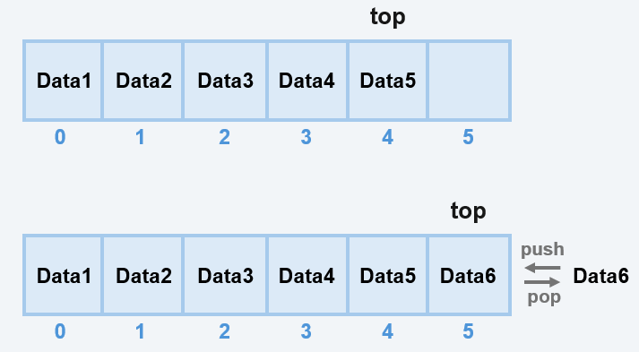

목차
스택Stack
스택(Stack)은 데이터의 삽입과 삭제가 한쪽 방향에서만 이루어지는 선형 자료구조입니다.
가장 마지막에 들어온 데이터가 가장 먼저 나가는 LIFO (Last In, First Out) 구조를 가집니다.


- 접근 가능한 위치는 항상 top 하나뿐
- 중간 요소에 직접 접근 불가
- 연산 규칙이 단순하고 명확함
스택 구현 방식
스택은 다음과 같은 방식으로 구현할 수 있습니다.
- 배열(Array)을 이용한 스택
- 연결 리스트(Linked List)를 이용한 스택
배열을 이용한 스택

- 가장 마지막에 추가한 값이 top
- 배열 길이를 초과할 시 overflow 발생 가능
- 추가/삭제의 시간 복잡도가 O(1)
연결 리스트를 이용한 스택

- top 노드가 가르키는 값이 top
- overflow 발생 없이 값 추가 가능
- 값을 빼고 넣는 것이 아닌 포인터가 가르키는 값을 변경하여 추가/삭제
- 위 그림 처럼 연결 리스트의 head가 top일 경우, 추가/삭제의 시간 복잡도가 O(1)
스택의 장단점
장점
- 구조가 단순하여 구현과 이해가 쉬움
- LIFO 구조로 undo/redo, 재귀 호출 등 활용에 적합
- 추가/삭제의 시간 복잡도가 O(1)
단점
- 중간 데이터를 직접 접근할 수 없음
- 고정 크기 스택의 경우 overflow 발생 가능
- 비어 있는 상태에서 pop 시 오류 발생
예시 구현 코드 (Python)
배열을 이용한 스택의 구현 예시입니다.
class Stack:
def __init__(self):
self.data = []
def push(self, value):
self.data.append(value)
def pop(self):
if self.is_empty():
raise IndexError("Stack is empty")
return self.data.pop()
def peek(self):
if self.is_empty():
raise IndexError("Stack is empty")
return self.data[-1]
def is_empty(self):
return len(self.data) == 0
push
def push(self, value):
self.data.append(value) # 배열 맨 끝에 값을 추가
push는 최상단(top)에 데이터를 추가하는 연산입니다.
배열의 맨 끝에 값을 넣는 것이므로 시간 복잡도는 O(1)입니다.
스택은 LIFO에 따라 top에만 값을 추가할 수 있으므로 삽입은 불가능합니다.
pop
def pop(self):
if self.is_empty(): # 스택이 비어있는지 확인
raise IndexError("Stack is empty") # 비어있으면 에러
return self.data.pop() # top의 값을 삭제 및 반환
pop은 최상단(top)의 데이터를 제거하고 반환하는 연산입니다.
배열 끝의 값을 삭제하기 때문에 나머지 값을 옮길 필요가 없어 시간 복잡도는 O(1)입니다.
peek
def peek(self):
if self.is_empty(): # 스택이 비어있는지 확인
raise IndexError("Stack is empty") # 비어있으면 에러
return self.data[-1] # top의 값 반환
peek은 데이터를 제거하지 않고 최상단 값(top)을 확인하는 연산입니다.
top의 위치는 이미 알고 있으므로 시간 복잡도는 O(1)입니다.
is_empty
def is_empty(self):
return len(self.data) == 0 # 스택의 길이 반환
is_empty는 스택이 현재 비어 있는지를 확인하는 연산입니다.
스택이 비어있을 때 연산을 진행해 에러가 나는 것을 방지하기 위해 사용합니다.
반환 값은 bool(True/False) 값이며, 파이썬의 len()은 저장된 length 값을 읽어 오기 때문에 시간 복잡도는 O(1)입니다.
체험존
길이가 8인 스택